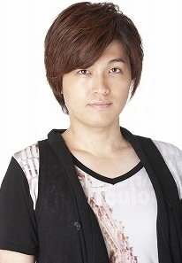
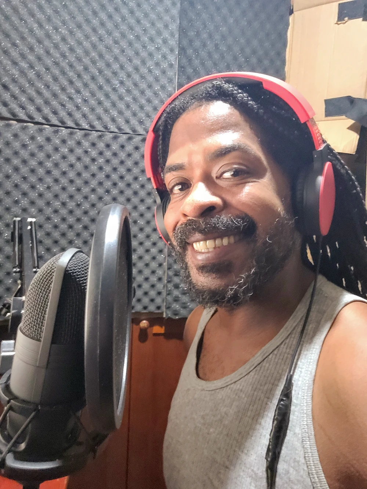

Tashiro Gonsaburō é um dos amigos mais próximos de Miyano e uma das figuras mais divertidas da série. Observador e descontraído, ele frequentemente percebe situações que passam despercebidas pelos outros. Seu senso de humor ajuda a aliviar momentos tensos, mas também demonstra maturidade ao apoiar os amigos quando necessário.
Jap: Mitsuhiro Ichiki 

Nacionalidade:BrasileiroData de nascimento: 27 de Outubro de 1986Local de nascimento: São Paulo,SPIdade: 39 AnosTrabalhou tambem em:O Mundo de GregHaikyú!!Ursinhos em Curso